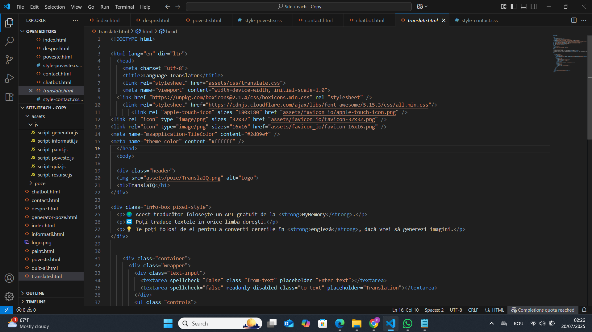
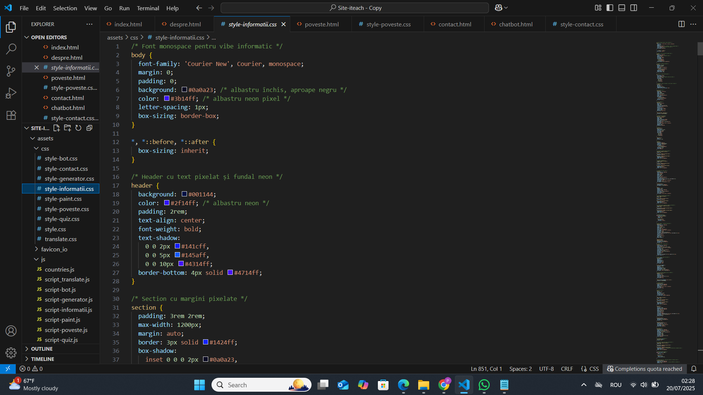

Fragmente de Cod și Poze



Nume: Păun Monica Georgiana
Clasa: a X-a
Instituție: Colegiul Național „Tudor Vladimirescu” din București
Profesor coordonator: Măreș Mădălina
Acest proiect este o platformă interactivă care combină inteligența artificială în trei funcționalități principale: un chatbot AI, un traducător automat și un generator de imagini pe baza cererilor textuale. Fiecare modul este creat pentru a oferi utilizatorului o experiență educațională și practică legată de noile tehnologii AI.
Ideea acestui site este 100% originală și a fost creată pentru a oferi o platformă educațională interactivă despre inteligența artificială și tehnologiile digitale. Deși conceptele și structura generală sunt originale, unele componente tehnice, precum chatbotul, traducătorul și generatorul de imagini, au fost dezvoltate pornind de la tutoriale disponibile public pe YouTube. Acestea au fost însă adaptate și personalizate în mod semnificativ pentru a se potrivi nevoilor proiectului și pentru a crea o experiență unică pentru utilizatori.
Acest proiect este publicat online și poate fi accesat la următoarea adresă: https://iqgenix.netlify.app. Codul sursă este disponibil pe GitHub și poate fi consultat aici: https://github.com/MonicaPaun/IQgenix.
Proiectul a fost dezvoltat pentru a demonstra funcționarea și potențialul AI în aplicații diverse, facilitând învățarea practică și interacțiunea cu sisteme inteligente. Este destinat celor interesați să exploreze AI într-un mod accesibil, educațional și aplicat.
În plus față de funcționalitățile AI, am introdus o poveste interactivă despre un robot numit Intellix, care „gândește” și ia decizii într-un oraș inteligent al viitorului. Această poveste este gândită să stimuleze memoria, imaginația și exprimarea utilizatorilor, oferindu-le posibilitatea să aleagă continuarea aventurii și deciziile robotului.
Mai mult, am inclus o pagină specială unde utilizatorii pot să-și lase imaginația să zboare liber, desenând în stil „paint” digital. Aici pot crea orice își doresc, completând experiența educațională și interactivă oferită de platformă.
Pentru a utiliza această platformă, este suficient un dispozitiv cu un browser modern, cum ar fi Google Chrome, Firefox, Edge sau Safari. Nu sunt necesare instalări suplimentare. Accesul la internet este obligatoriu pentru a interacționa cu API-urile externe.
Proiectul este creat pentru studenți, pasionați de tehnologie și oricine dorește să învețe despre inteligența artificială printr-o experiență practică și interactivă. De asemenea, poate servi ca instrument educațional în mediul academic sau pentru auto-învățare.